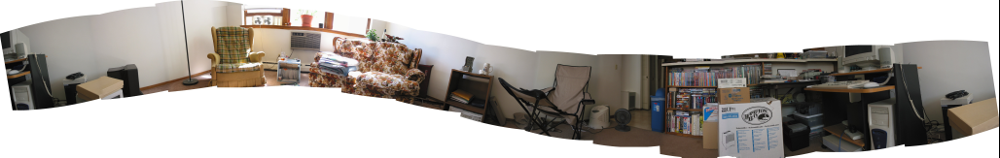
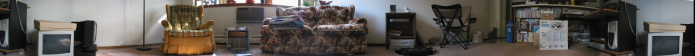

So I picked up a digital camera last weekend. And I did kind of know this, but I didn't get around to playing with it much until this weekend. Yeah I did a little last weekend, but it pretty much remained untouched durring the week. Anyways, that's not why this is here.
So the camera has a mode called Stitch Assist. Mostly just being a slight variation on the view screen to assist you in making panoramic views. You take a bunch of shots, then upload, then open in a supplied helper program to assemble them. Quite neat.
So I did this quick, and learned a lesson. There is a reason for tripods. 
I don't own a tripod, so I make-shifted a pile of things, and then got this much better view. 
Even neater is that you can save quicktimeVR files!